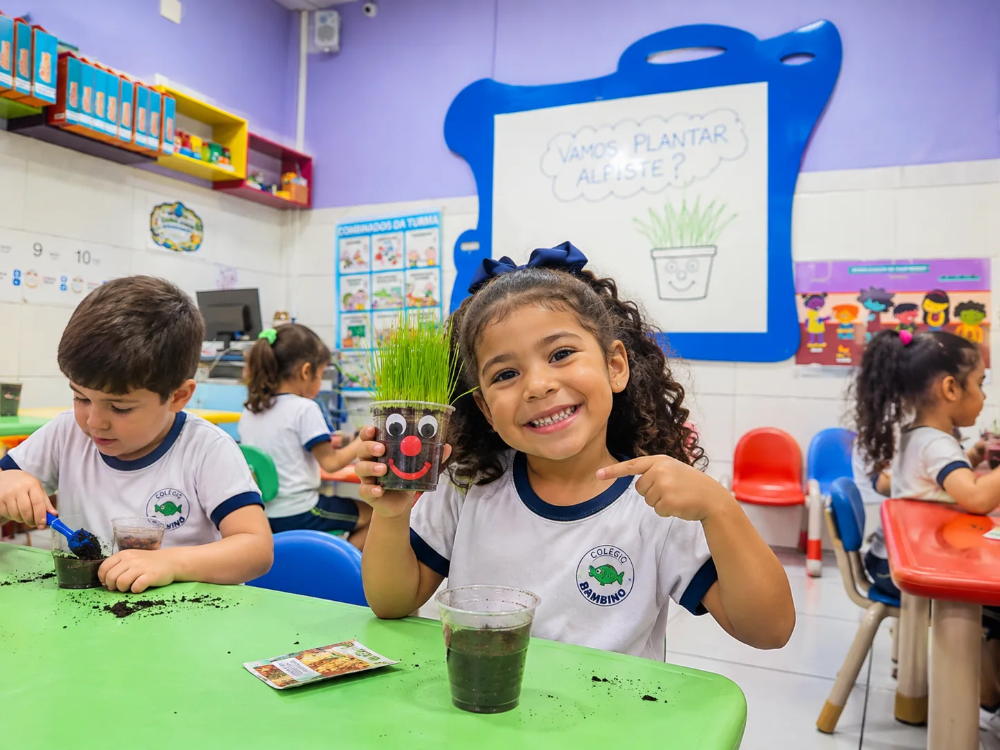

Linguagem e expressão
Falar, ouvir e criar histórias.
No maternal, a curiosidade ganha movimento. Brincadeiras, histórias, arte e interações ajudam a ampliar a linguagem, a coordenação motora, a criatividade e as experiências de autonomia.

Com experiências adequadas a essa fase e apoio da proposta pedagógica COC, as crianças observam, experimentam, convivem e encontram novas maneiras de se comunicar e compreender o mundo.
Falar, ouvir e criar histórias.
Aprender explorando o espaço.

Imaginar e inventar possibilidades.

Interagir e conquistar novos passos.

Histórias, jogos, linguagem, movimento, artes e convivência se encontram em experiências planejadas para ampliar a curiosidade e a autonomia. No maternal, aprender é descobrir com o corpo inteiro.